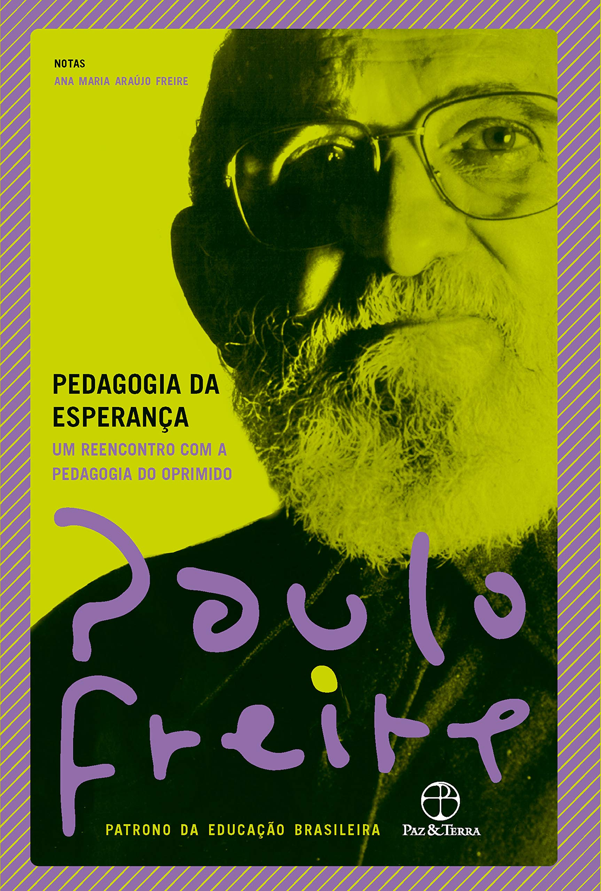

Finalidade Pedagógica


Sustentabilidade & Acessibilidade: Educação Ambiental, Inclusão e Direitos da Pessoa com Deficiência
Autor: Jorge Amaro de Souza Borges
Acessar
Política da Pessoa com Deficiência no Brasil: Percorrendo o Labirinto
Autor: Jorge Amaro de Souza Borges
Acessar





Educação Inclusiva: Articulações Teórico-práticas no Contexto do ProfE
Autor: Gizeli Aparecida Ribeiro de Alencar, Solange Franci Raimundo Yaegashi, Roseneide Maria Batista Cirino
Acessar